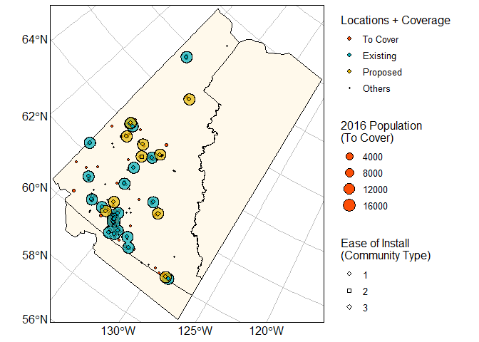

Many monitoring networks do not have full coverage of their intended targets. Network managers are usually working with limited budgets for expanding exisiting networks, and knowing where to prioritize installations to maximize coverage is a useful tool for planning.
gapfinder provides the abiliity to identify optimal installation locations to meet coverage goals.
You can provide potential installation locations, exisiting monitoring locations (if any), locations desired to be covered, and individual prioritization weights for potential locations and locations to be covered. In return, gapfinder will calculate the optimal locations to cover as much as possible, minimizing overlap, and allows for prioritizing installations based on unique coverage of each installation.
Installation
You can install the development version of gapfinder like so:
# install.packages("pak")
pak::pak("B-Nilson/gapfinder")Example
This is a basic example which shows you how to solve a common problem:
library(gapfinder)
rlang::check_installed("canadata")
rlang::check_installed("aqmapr")
# pak::pak("B-Nilson/canadata") # in case above fails
# Define where we could install monitors (Yukon communities)
install_at <- canadata::communities |>
dplyr::filter(prov_terr == "YT") |>
sf::st_as_sf(coords = c("lng", "lat"), crs = "WGS84") |>
# Cities are easier to install than hamlets
# here they provide 4x more coverage (4 levels of type)
dplyr::mutate(ease_of_install = length(levels(type)) + 1 - as.numeric(type))
# Define what we want the monitors to cover (Yukon population)
to_cover <- canadata::gridded_2016_population |>
dplyr::filter(stringr::str_detect(prov_terrs, "YT")) |> # any cell that intersects Yukon
sf::st_as_sf(coords = c("lng", "lat"), crs = "WGS84")
# Define existing monitors (Canadian PM2.5 monitoring network - NAPS, PurpleAir, and AQEgg networks)
existing_locations <- "https://aqmap.ca/aqmap/data/aqmap_most_recent_obs.csv" |>
read.csv() |>
dplyr::select(site_id = sensor_index, network, lng, lat, name = monitor) |>
sf::st_as_sf(coords = c("lng", "lat"), crs = "WGS84")
# Find the optimal locations to get all YT population within 10 km of a monitor
# Coverage depends on population x ease of install
optimized_locations <- install_at |>
optimize_coverage(
to_cover = to_cover,
existing_locations = existing_locations,
cover_distance = units::set_units(25, "km"),
weight_columns = c("ease_of_install", "total_population")
)
# View the results
install_at |> summary()
#> name type prov_terr fcst_zone
#> Length:66 city : 1 YT :66 Length:66
#> Class :character town : 7 BC : 0 Class :character
#> Mode :character village: 7 AB : 0 Mode :character
#> hamlet :51 SK : 0
#> MB : 0
#> ON : 0
#> (Other): 0
#> geometry ease_of_install
#> POINT :66 Min. :1.000
#> epsg:4326 : 0 1st Qu.:1.000
#> +proj=long...: 0 Median :1.000
#> Mean :1.364
#> 3rd Qu.:1.000
#> Max. :4.000
#>
to_cover |> summary()
#> prov_terrs fcst_zone total_land_area total_population
#> Length:105 Length:105 Min. :41.80 Min. : 5.0
#> Class :character Class :character 1st Qu.:90.30 1st Qu.: 15.0
#> Mode :character Mode :character Median :94.00 Median : 45.0
#> Mean :89.66 Mean : 341.3
#> 3rd Qu.:94.30 3rd Qu.: 130.0
#> Max. :94.50 Max. :17175.0
#> rural_population geometry
#> Min. : 5.0 POINT :105
#> 1st Qu.: 15.0 epsg:4326 : 0
#> Median : 45.0 +proj=long...: 0
#> Mean : 134.3
#> 3rd Qu.: 130.0
#> Max. :1450.0
existing_locations |> summary()
#> site_id network name geometry
#> Length:2877 Length:2877 Length:2877 POINT :2877
#> Class :character Class :character Class :character epsg:4326 : 0
#> Mode :character Mode :character Mode :character +proj=long...: 0
optimized_locations |> summary()
#> name type prov_terr fcst_zone
#> Length:10 city :0 YT :10 Length:10
#> Class :character town :1 BC : 0 Class :character
#> Mode :character village:1 AB : 0 Mode :character
#> hamlet :8 SK : 0
#> MB : 0
#> ON : 0
#> (Other): 0
#> geometry ease_of_install
#> POINT :10 Min. :1.0
#> epsg:4326 : 0 1st Qu.:1.0
#> +proj=long...: 0 Median :1.0
#> Mean :1.3
#> 3rd Qu.:1.0
#> Max. :3.0
#>
# Map the results
plot_coverage(
install_at = install_at,
to_cover = to_cover,
existing_locations = existing_locations,
optimized_locations = optimized_locations,
cover_distance = units::set_units(25, "km"),
weight_columns = c(
"Ease of Install\n(Community Type)" = "ease_of_install",
"2016 Population\n(To Cover)" = "total_population"
),
in_canada = TRUE
) |> print()
#> Warning: attribute variables are assumed to be spatially constant throughout
#> all geometries